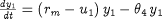
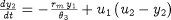
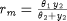
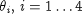
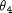
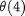

The gPROMS installation includes a simple Experiment Design example - it is highly recommended that you take a look at this. You can access this by clicking on the browse examples button on the gPROMS Tool bar and then navigating to General capabilities\Model Validation\DesignFedbatch.gPJ (as shown below). This section explains the features of the model.
The example considers the fed-batch fermentation process shown in the figure below.
The mathematical model for the process is as follows:
Biomass concentration

Substrate concentration

Reaction rate

The table below summarises the parameters to be estimated and the design variables that appear in this model.
| Model Variables | |
|---|---|
|  | Parameters to be estimated |
| u1 | Dilution factor |
| u2 | Feed substrate concentration |
| y1 | Biomass concentration |
| y2 | Substrate concentration |
| rm | Reaction rate |
Before this model can be used to simulate or optimise the fermentation process, all parameters that appear in it must be given values. Imagine, however, a situation where the kinetic parameters are unknown. That is, we do not know the values of . To determine these, we can perform a number of experiments, measure the values of some or all process variables, and estimate the kinetic parameters that best fit the measured data (see Parameter Estimation in gPROMS for a more detailed description).
In the example, it is assumed that we design one new experiment, take up to 10 samples at different times and measure the biomass and substrate concentration, y1 and y2, in each sample using a High Pressure Liquid Chromatograph (HPLC). The duration of the experiment should be between 5 and 10 hours. The dilution factor u1 and the feed substrate concentration u2 may be varied over time. We may also change the initial value of the biomass concentration y1(0) in the reactor.
Resource availability may impose an upper limit on the feed substrate concentration.
The Experiment Design problem seeks to provide answers to the following questions
What initial biomass concentration y1(0) should we use?
How long should we run the experiment for?
How should we vary the feed flowrate for the dilution factor u1(t) and the feed substrate concentration u2(t) over the duration of the experiment?
When should we take the measurement samples?
The unknown parameters to be estimated are (gPROMS pathname FERMENT.theta(1)) to  (gPROMS pathname FERMENT.  ). We use the estimated value of each of the parameters as the SCALING_FACTOR so that the scaled values of all parameters are one.
An HPLC is used to measure both y1 and y2. The variance model is described as CONSTANT_VARIANCE with equal to 0.5.
The table below contains the above information for the fed-batch fermentation experiment.
| Type of Decision Variable | Variable | Initial Guess | Lower Bound | Upper Bound |
|---|---|---|---|---|
| Experiment Duration | tf | 10.0 | 5.0 | 10.0 |
| Initial Condition | y1(0) | 7.0 | 1.0 | 10.0 |
| Time-varying control (piecewise-constant) | u1(t) | 0.2 | 0.05 | 0.2 |
| Time-varying control (piecewise-constant) | u2(t) | 15.0 | 5.0 | 35.0 |